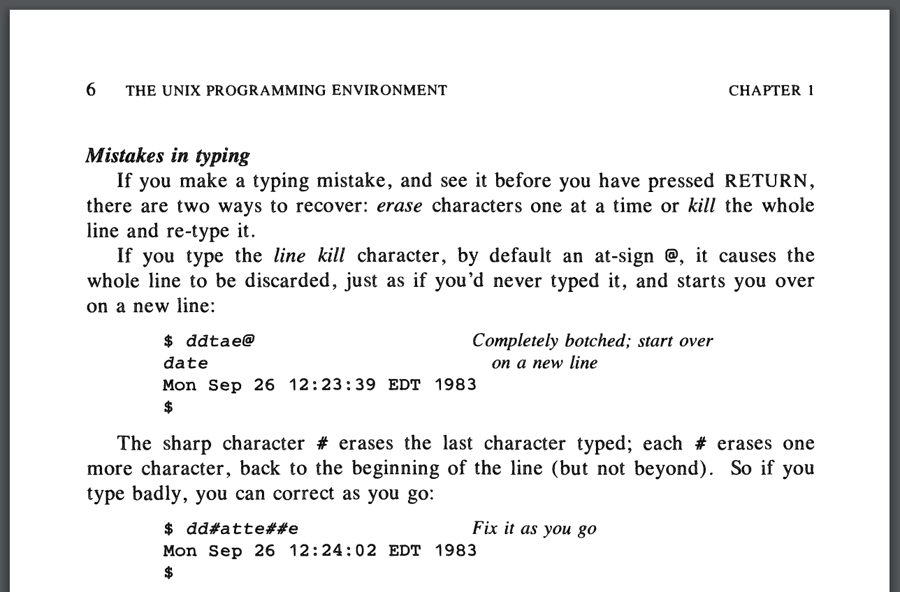

Python and the Glories
of the UNIX Tradition
PyCon UK 2016
@brandon_rhodes
Another adventure
pwd
ls -F
cd
UNIX
Python is part of the tradition
of languages and tools that grew
up within the UNIX ecosystem
Q: What does Python and the
tradition share in common?
Two quick terms:
“Operating system”
“System call”
Implement and Iterate
MULTICS (1965–) → UNIX (1969–)
“plan to throw one away;
you will, anyhow”
Fred Brooks, The Mythical Man-Month
ABC → Python
Interactivity

And the UNIX shell
was not just interactive
it was a programming
language!
$ for host in app db www
> do ssh $host sudo apt-get upgrade
> done
Both Unix and
Python worked to offer a full
programming experience
interactively
Interactive systems can make
it faster to iterate
$ head -2 /etc/passwd
root:x:0:0:root:/root:/bin/bash
daemon:x:1:1:daemon:/usr/sbin:/usr/sbin/nologin
$ sed 's/:.*//' /etc/passwd | head -2
root
daemon
$ sed 's/:.*//' /etc/passwd | sort | head -2
_apt
avahi
>>> lines = open('/etc/passwd').readlines()
>>> line = lines[0]
>>> line
'root:x:0:0:root:/root:bash\n'
>>> line.split()
['root:x:0:0:root:/root:bash']
>>> line.split(':')
['root', 'x', '0', '0', 'root', '/root', 'bash\n']
>>> line.split(':')[0]
'root'
>>> sorted(line.split(':')[0] for line in lines)
['_apt', 'avahi', 'avahi-autoipd', 'backup',...]
✔ Interactivity
Recursive Data Layout
How should a disk
drive maintain its
list of files?
How many lists of files?
Per-user? System list? Dropbox?
What’s the API for
accessing each one?
MULTICS
What if every directory
…
MULTICS
What if every directory
IS ITSELF A FILE
“Hierarchical filesystem”
If directories are files—
1. Directories have names
If directories are files—
1. Directories have names
2. Simply open() and read()
If directories are files—
1. Directories have names
2. Simply open() and read()
3. Nest inside other directories!
/
├── bin
├── dev
├── etc
└── usr
├── brandon
└── jackie
Unix: Hierarchical Filesystem
Python: ?
Unix: Hierarchical Filesystem
Python: Recursive Data Structures
Python data structures
nest arbitrarily!
Python data structures
nest arbitrarily!
(Except dict keys)
[('USD', '$', 1.00),
('GBP', '£', 1.32)]
{'.py': ['mod.py', 'test.py'],
'.pyc': ['mod.pyc']}
{('python.org', 80): 9173,
('python.org', 443): 137574}
✔ Recursive Data Layout
Plain Text
ASCII characters 32–126
!"#$%&'()*+,-./0123456789:;<=>?
@ABCDEFGHIJKLMNOPQRSTUVWXYZ[\]^_
`abcdefghijklmnopqrstuvwxyz{|}
plus the newline \n
UNIX tends to use plain text
for everything it possibly can
Filename? Plain text!
README
setup.py
Python-1.5.1.tar.gz
Path? Plain text!
/usr/lib/python2.7
Craziness
/etc/passwd
Fixed-length records? —
/etc/passwd
Fixed-length records? No!
On-disk hash table? —
/etc/passwd
Fixed-length records? No!
On-disk hash table? No!
Plain text!
root:bh0ENureqXWho.:0:0:root:/:bash
bin:x:1:1:bin:/bin:nologin
sys:x:2:2:sys:/dev:nologin
sshd:x:122:65534::/var/run/sshd:nologin
brandon:Ep6mckrOLChF.:1000:1000:/usr/brandon:zsh
Craziness
UNIX was an act of divestiture
Plain text means that standard
tools can operate on system data
$ grep '^uucp:' /etc/passwd
uucp:x:10:10:uucp:/var/spool/uucp:/usr/sbin/nologin
$ sed 's/:.*//' /etc/passwd | sort | head -2
_apt
avahi
Personal preferences
Special registry?
Special system calls?
Plain text!
“Environment”
$ set
EDITOR=emacs
HOME=/home/brandon
LOGNAME=brandon
PAGER=less
PYTHONDONTWRITEBYTECODE=PLEASE
SHELL=/bin/zsh
Unix: Plain Text
Python: ?
Unix: Plain Text
Python: Plain Data Structures
tuple list dict
>>> type(sys.argv)
<type 'list'>
>>> type(sys.path)
<type 'list'>
>>> type(sys.modules)
<type 'dict'>
✔ Plain Text
✔ Plain Data
Everything is a File
Regular file
open() close()
read() write()
seek() tell()
Directory
open() read() close()
Applications like /bin/ls and
libraries like /lib/libc-2.23.so
are just regular files that start with
a header the OS recognizes
open() close()
read() write()
seek() tell()
$ od -x /bin/cat | head -1
0000000 457f 464c 0102 0001 0000 0000 0000 0000
/etc/magic
Lists magic numbers so you can
identify different kinds of file
$ file /etc/passwd
/etc/passwd: ASCII text
$ file Gentium-R.ttf
Gentium-R.ttf: TrueType font data
$ file /bin/ls
/bin/ls: ELF 64-bit LSB executable, x86-64...
Terminals like
/dev/tty21 also
live on the filesystem!
open() close()
read() write()
So file permissions can
protect ttys and block devices!
$ tty
/dev/pts/1
$ ls -l /dev/pts/1
crw--w---- 1 brandon tty 136, 1 /dev/pts/1
fsck
How does it access the disk?
A dozen special system calls?
fsck
Can simply use:
/proc/mounts
/dev/sdb3
Unix: Everything is a File
Python: ?
Unix: Everything is a file
Python: Everything is an object
Common protocols get
re-used across many objects
string[key]
my_tuple[key]
my_list[key]
my_dict[key]
sys.environ[key]
berkeley_db[key]
Everything is an object
↓
Duck typing
A beautiful error
>>> from collections import namedtuple
>>> Point = namedtuple('Point', 'x y')
>>> p = Point(3.0, 4.0)
>>> isinstance(p, namedtuple)
Unix: ✔ Everything is a file
Python: ✔ Everything is an object
First-Class Errors
How do you detect
that a Unix program
has failed?
1. Detection: programs exit
with integer status
0 — success
1 — failure
2 — failure
⋮
$ ls /var/tmp
$ echo $?
0
$ ls /etcc
ls: cannot access '/etcc'
$ echo $?
2
if grep brandon /etc/passwd
then
echo "We have a brandon!"
else
echo "We have none."
fi
You can stop upon
receiving an error with
bash -e script.sh
or
set -e inside the script
2. Data: error messages written
to a dedicated stderr output
$ ls -l passwd grouppw shadow
ls: cannot access 'grouppw': No such file
-rw-r--r-- 1 root root 2225 Sep 11 05:06 passwd
-rw-r----- 1 root shadow 1246 Sep 7 10:44 shadow
$ ls -l passwd grouppw shadow 1>out 2>err
$ cat out
-rw-r--r-- 1 root root 2225 Sep 11 05:06 passwd
-rw-r----- 1 root shadow 1246 Sep 7 10:44 shadow
$ cat err
ls: cannot access 'grouppw': No such file
Unix: status and stderr
Python: ?
Unix: status and stderr
Python: first-class exceptions
with open('/etc/password') as f:
lines = list(f)
→ IOError: No such file or directory
- No return codes to check
- Exception can carry data
try:
f = open(path)
except IOError as e:
print e.errno
print e.filename
print e.strerror
✔ First-Class Errors
Pipes
$ sed 's/:.*//' /etc/passwd | sort | head -2
Unix: Pipes
Python: ?
Unix: Pipes
Python: Iterator Protocol
$ sed 's/:.*//' /etc/passwd | sort | head -2
lines = open('/etc/passwd')
usernames = (s.split(':')[0] for s in lines)
print sorted(usernames)[:2]
✔ Pipes
Offer Power Tools
“Use simple algorithms as
well as simple data structures”
— Rob Pike
“Use simple algorithms as
well as simple data structures”
— Rob Pike
“No! Use complicated data
structures: set and dict.”
— Python
sort
sort
dict
✔ Power Tools
Limited Core
UNIX
Small kernel + programs
Python
Small runtime + standard library
Reference Counting
$ echo Brandon > my_name
$ ls -l
-rw-r----- 1 ... my_name
$ ln my_name moniker
$ ls -l
-rw-r----- 2 ... my_name
-rw-r----- 2 ... moniker
Q: When the final link
to a file disappears, and its
reference count drops to zero,
can it be removed?
A: Not necessarily.
A process might still
have the process open
Weak operating systems
forbid removal of
open files
┌────────────────────────┐
│ RAM │
│ │
│ inode ← PID 1 │
│ nlink=4 ← PID 2 │
└────── ║ ─────────────┘
┌────── ║ ─────────────┐
│ inode ← name1 │
│ nlink=2 ← name2 │
│ │
│ Disk │
└────────────────────────┘
┌────────────────────────┐
│ RAM │
│ │
│ inode ← PID 1 │
│ nlink=3 ← PID 2 │
└────── ║ ─────────────┘
┌────── ║ ─────────────┐
│ inode ← name1 │
│ nlink=1 │
│ │
│ Disk │
└────────────────────────┘
┌────────────────────────┐
│ RAM │
│ │
│ inode ← PID 1 │
│ nlink=2 ← PID 2 │
└────── ║ ─────────────┘
┌────── ║ ─────────────┐
│ inode │
│ nlink=0 │
│ │
│ Disk │
└────────────────────────┘
import os
with open('file', 'w+') as f:
os.unlink('file') # "rm file"!
f.write('one line\n')
f.seek(0)
print f.read() #=> "one line"
$ lsof -p 24751
COMMAND PID FD SIZE/OFF NAME
python 24751 cwd 4096 /home/brandon/talks
python 24751 rtd 4096 /
python 24751 txt 3546104 /usr/bin/python2.7
...
python 24751 0u 0t0 /dev/pts/7
python 24751 1u 0t0 /dev/pts/7
python 24751 2u 0t0 /dev/pts/7
python 24751 3u 9 file (deleted)
stat = os.fstat(f.fileno())
print stat.st_nlink #=> 0
from tempfile import TemporaryFile
This is how an installer
can rm an executable and
replace it without forcing
you to quit the app
✔ Reference Counting
1958 consent decree
UNIX → BSD → NEXTSTEP → OS X
UNIX → BSD → NEXTSTEP → OS X
⇢ MINIX ⇢ Linux
Today
- I work at Dropbox
- Servers run Linux
- Laptops run OS X
UNIX
Freedom
Freedom
↓
Tradition
Freedom
↓
Tradition
↓
Community
Welcome to
PyCon UK 2016!
@brandon_rhodes